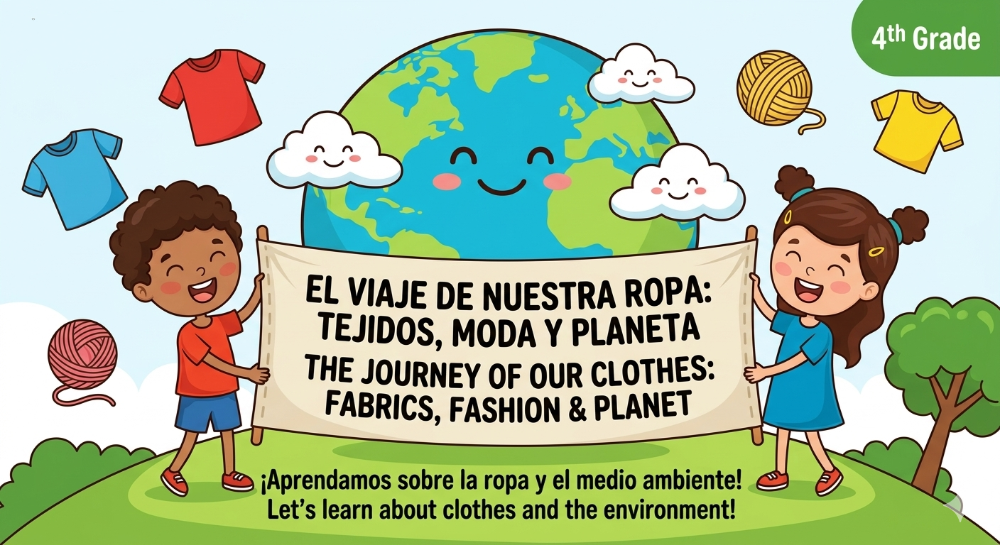

1. Welcome to our Wardrobe!
Welcome to the Challenge:
Our Sustainable Wardrobe! 🌍👕

.¿Alguna vez te has preguntado qué secretos esconde tu armario?
En este proyecto vamos a convertirnos en Diseñadores Sostenibles.
.¿Qué vamos a descubrir?
The Journey of Clothes: De dónde vienen los materiales como la lana o el poliéster.
Our Impact: Cómo nuestras decisiones al comprar ropa ayudan al planeta.
.The Final Mission:
Crearéis un "Decálogo del Diseñador Sostenible" en inglés para ayudar a otros niños.
.Datos Clave:
Para que nos organicemos bien, estos son los datos de nuestra misión:
Target Group: 4º de Educación Primaria.
Subjects: Inglés y Educación en Valores.
Final Product: Un póster digital y un decálogo de consejos.